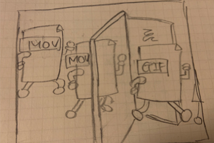

ブログのアイキャッチ
概要
イラスト練習のため、LIGブログのアイキャッチをリデザインした。
記事の内容
記事URL：https://liginc.co.jp/507757
ファイル容量の大きい動画や音声データを、別の軽い形式に変換できる便利なソフト「FFmpeg」の紹介。記事内で、MOV形式の動画をアニメーションGIFへ変換する手順を伝えている。
ターゲット
動画の変換ソフトに興味がある人、変換ソフトを探している人
記事の本質
FFmpegで簡単に動画形式を別に形式に変換できる。
記事を読んだ人の感情的ゴール
- FFｍpegは「簡単に」動画形式の変換ができる便利なソフトである
- こんなに「簡単」なら自分も使ってみよう
方向性・アイディア
FFmpegで簡単に動画形式を変更できることを伝えるため、MOVファイルとGIFファイルをイラスト化。ファイルが変換されている様子を色や形の変化で分かりやすく表現する。
制作過程
ラフ画
完成
- ファイルをヒトのように描き、扉（FFmpegを表す）を通りぬけるだけでMOVファイルがGIFファイルに変換されている様子を表現
- 扉の色はFFmpegのロゴカラーの緑を使用し、中央にロゴマークを表記している
- 背景色は、記事を読んだ人の感情的ゴールから希望を感じるようなポジティブな色を連想し、黄色を使用
- グラデーションを使用することでMOVファイル（左側）からGIFファイル（右側）への変換を表現し、さらに右側の色を薄くすることでデータが軽くなっている変化を表現した
- イラストのテイストはLIGブログの他のアイキャッチを観察し、並べた時に浮かないように意識。色はマテリアルカラーのトーンに合わせた
制作ツール
Illustrator
制作期間
5時間